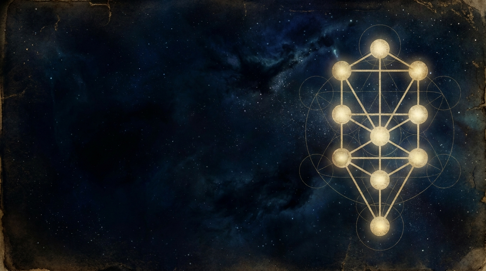
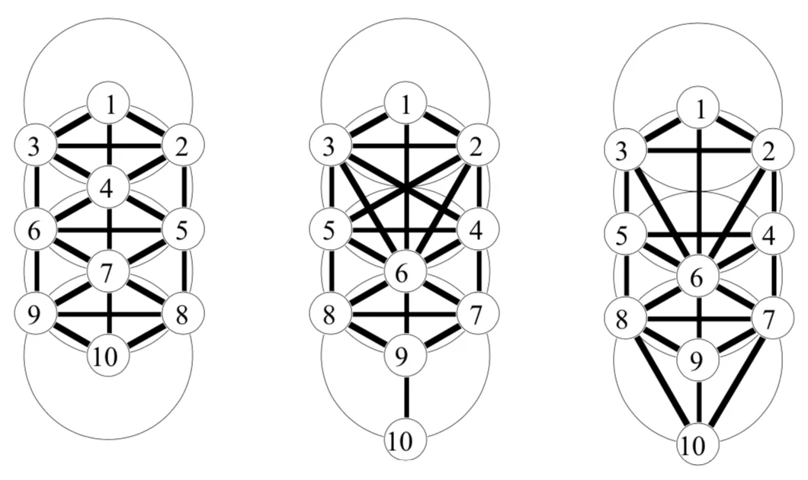
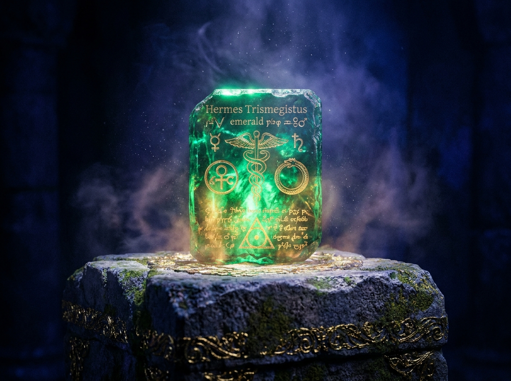
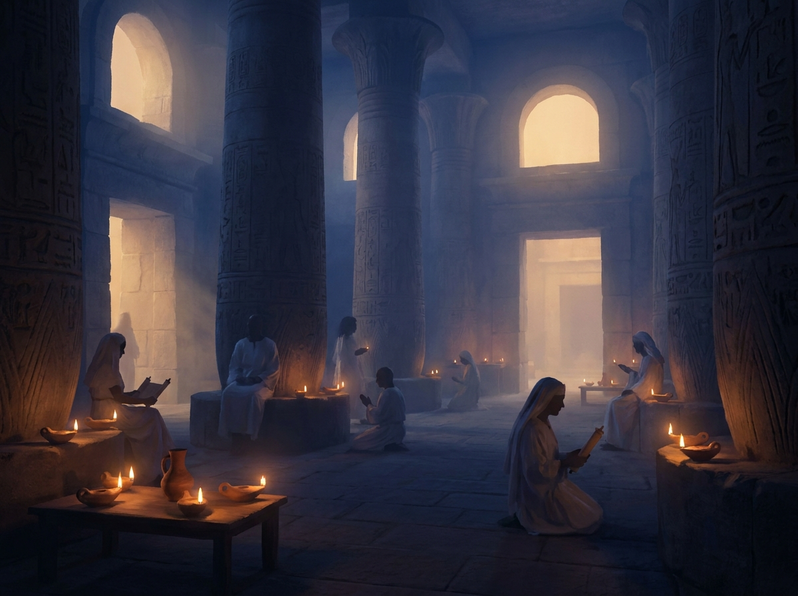
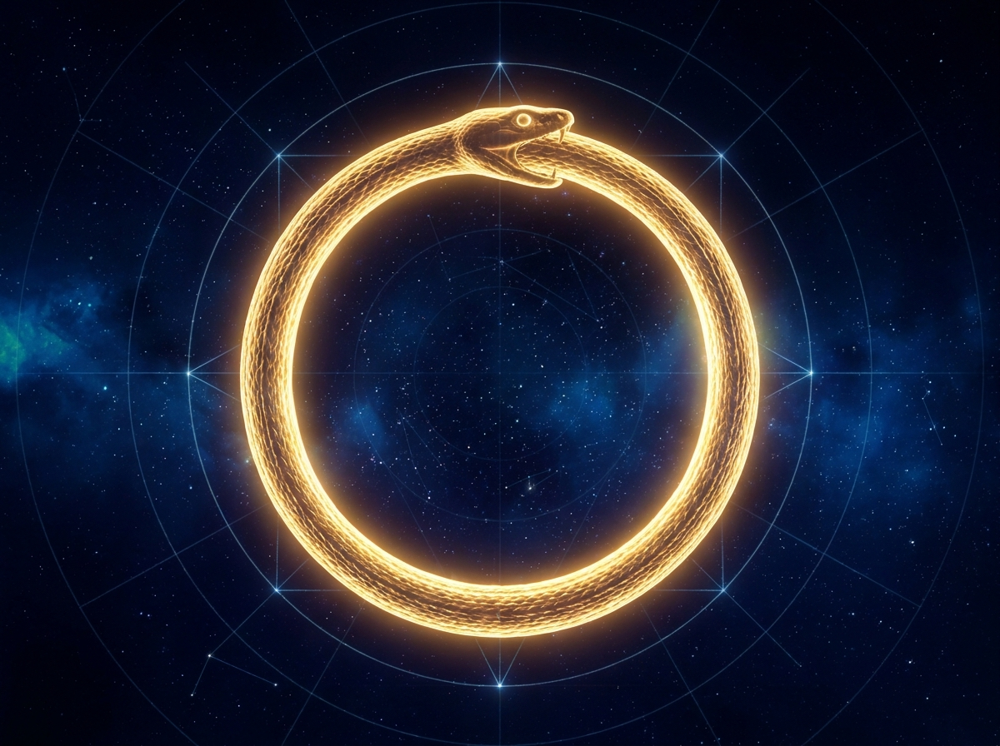
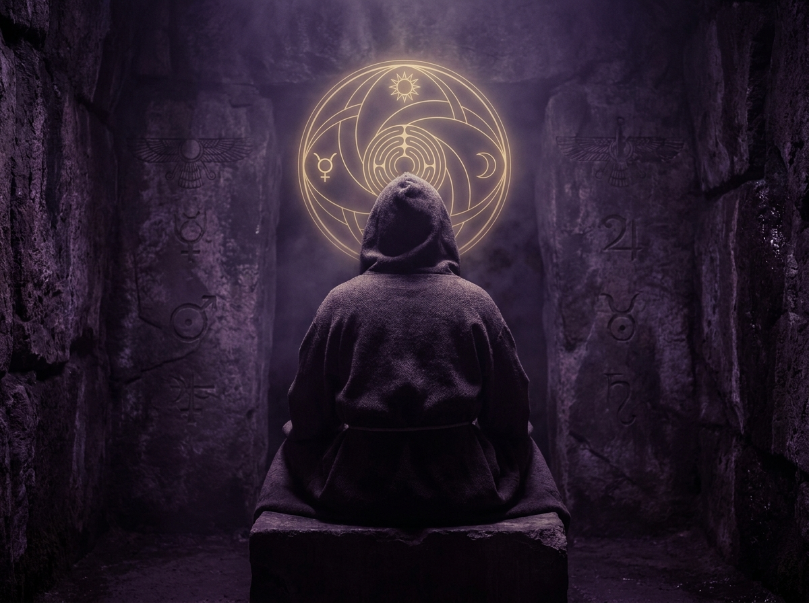
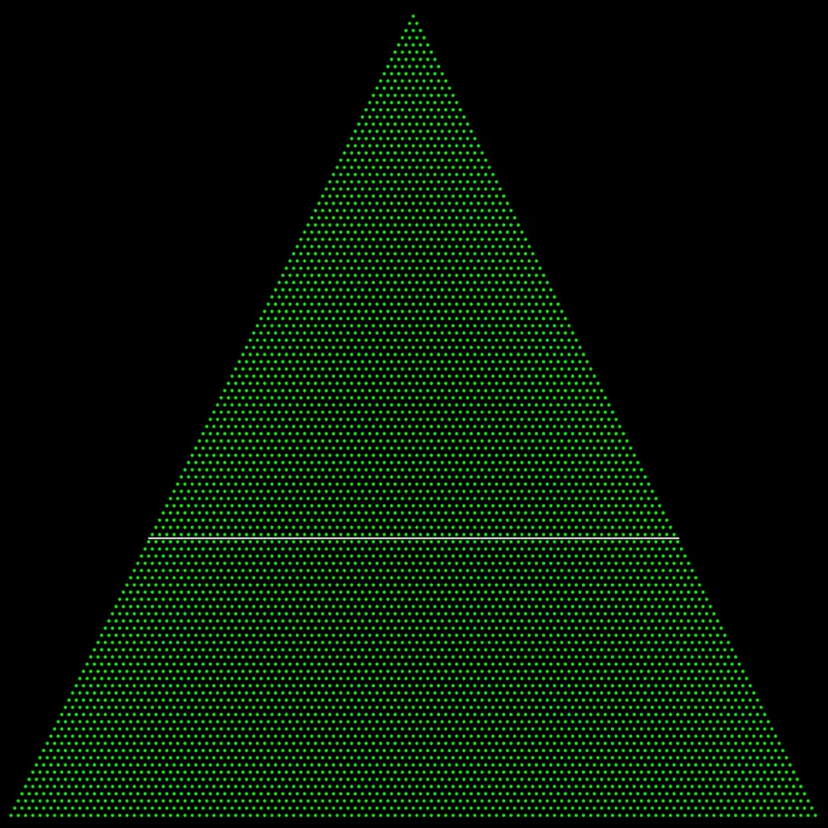
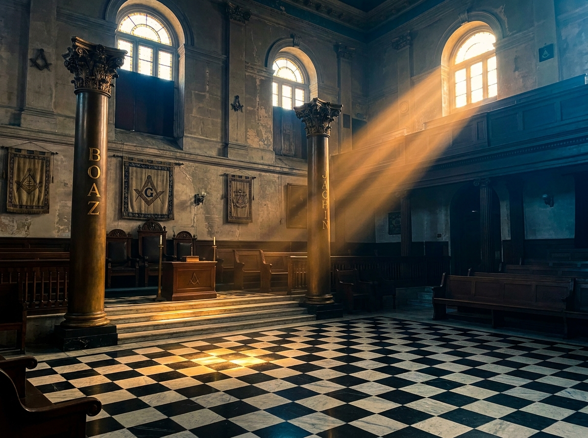

Qabbalah
ק
That Which Is Received
QaBbaLáH
The 32 wonderful paths of the Sefer Yetzirah — the root QBL, “to receive,” and the Tree of Life as a map of consciousness.
32 lessons 1 symbolic year1º – 10º
Comparison demo. No sign-in, mail, or payment.

Behold! — Psalm 133:1
for they come from the same country.— The Unknown Philosopher
The Invisible Society is a membership organization devoted to the preservation and transmission of the ancient mystical teachings. The QaBbaLáH Dá‘aTh Institute is its teaching Order — a Premasonic Qabbalistic Rosicrucian Secret Teaching of the Magdalene Rose.

Our teachings unfold through a Jungian “alchemystical” process of individuation — a Perpetual Initiation of Degrees in which every cycle through the 32 paths equals one symbolic year of Seminary.
We teach by the heuristic “Catch-On” method. Much is openly available and membership is open to all, yet the secrets of the Orders remain “lost” to those who do not catch on.
As a minister of the Society, each member is free to become a Member Facilitator in the Prosperity Initiative — “Lifting everyone up, without pushing anyone down.”
Guardian of the secrets of the ancient mystical teachings, received and transmitted from Degree to Degree.
Guardian of gemátria — γεωμετρία → gemátria — where גִּימַטְרִיָּא itself equals 273.
Guardian of the secrets of the Power of Zero and Division by Zero.
“Some men refuse to recognize the depth of something because they demand that the profound should manifest itself in the same way as the superficial.”
Antonio T. de Nicolás
Avatāra: The Humanization of Philosophy Through the Bhagavad Gītā, p.8
Yin and Yang and gender are perpetually created in equilibrium.
“Race” is an arbitrary concept, not a scientific concept.
We are one people. The concept of nations is arbitrary.
Politics is always “Us against Them.” Spirit is always “We.”
Each teaching is a cycle of study within the Perpetual Initiation. Open a door to read its syllabus, or add it to your personal Study Path.
That Which Is Received
The 32 wonderful paths of the Sefer Yetzirah — the root QBL, “to receive,” and the Tree of Life as a map of consciousness.

HermeticAs Above, So Below
The Emerald Tablet, the Corpus Hermeticum and the correspondence between the cosmos and the soul.
The Alchemystical Process
Alchemy as a metaphor for psychological transformation — making the darkness conscious.
Gemátria · γεωμετρία
The play of letters and numbers — Genesis 1:1 = 2701 = 37 × 73, and John 1:1 = 3627.
Vau · Qoppa · Sampi
The Lost-Letters Fraternity and The Catch-On Game — the heuristic method of teaching.
Órdo Rósae Crúcis Mýstae
The Magdalene Rose — Μαγδαληνῆς Ϝρόδον — and the Rosicrucian grades from Zelator to Ipsissimus.
Signs, Seasons, Days & Years
Solar signs with lunar months, the precession of Ages and the Galactic Alignment of 1998.

OrdersThose Who Serve
The Ancient Therapeutic Order of the Mystic Temple — healing and worship of the Alexandrian contemplatives.

HermeticAnd Division by Zero
The Naught Degree: polarities in equilibrium, and the mystery of the empty circle.

QabbalahInitiation New Thought Science
A Jungian “alchemystical” process of individuation through a perpetual initiation of Degrees.
Each cycle through the 32 Degrees of QaBbaLáH equals one symbolic year of Seminary. The 33rd Degree is mystic initiation by the Master Facilitator.
Order of Numerations · Select a Sefirah
Radiance & Beauty
The heart of the Tree — harmony of mercy and severity, the Pillar of Beauty.
Introduction
Introduction
Required for credit
Open to all
Dues · Tuition
$0 · $0 USD
Cumulative to here: $0
Dues paid to the Secretary · Fees paid to your Member Facilitator
Teaching materials created from 1980 to the present. They are not for sale — they are on long-term loan to the seeker.
Sacred Texts · PDF · 48 pages
Traditional, annotated · c. 2nd c.
“With thirty-two wonderful paths of wisdom… God created it all.”
Lectures · TXT · 12 pages
QaBbaLáH Dá‘aTh Institute · 1980–present
“’ā́LePh = 1, BēYTh = 2, GíMeL = 3 … T(h)āW = 400, with the final letters as later additions.”
Lectures · TXT · 10 pages
QaBbaLáH Dá‘aTh Institute · 1980–present
“Including the three lost letters: vau (6), qoppa (90) and sampi (900).”
Charts · Chart · 1 page
Invisible Society · 2024
“A comparative diagram of three traditional arrangements of the Sefirot and paths.”
Charts · Chart · 1 page
Invisible Society · 2026
“Genesis 1:1 = 2701 = 37 × 73. John 1:1 = 3627 = 39 × 93.”
Essays · PDF · 96 pages
∴Bro. Ken, 32º FM 33º MF∴ · 1997
““…the matrix screen…creates the experience of depth. You are experiencing an infinity of 360 degrees.””
Essays · PDF · 34 pages
Invisible Society · 2025
“Caldwell (1972), The Catch-On Game (1997) and The Matrix (1999) read side by side.”
Essays · PDF · 62 pages
Ordo Alchymistae Mystae · 2019
“Jung, Lévy-Bruhl and the personification of lifeless things.”
Lectures · TXT · 8 pages
QaBbaLáH Dá‘aTh Institute · 2026
“The direction to face in prayer to consciously receive from God.”
Charts · Chart · 2 pages
Invisible Society · 2026
“Ages of Taurus, Aries, Pisces and Aquarius at 2147.666 years per Age.”
Notices · TXT · 4 pages
Invisible Society CoLáCo · 2024
“Membership = Ordination. A Common Law Contract sealed by the payment of dues.”
Sacred Texts · PDF · 22 pages
Invisible Society · 2024
“No Sexism, No Racism, No Nationalism, No Politics — polarities in equilibrium.”
Enter Hebrew or Greek text — with or without vowel points and accents — to reveal its numerical value, prime factors and triangular structure.
Total Value · Hebrew

Genesis 1:1 = 2701 = 37 × 73 · John 1:1 = 3627 = 39 × 93

Our three Orders stand upon six centuries of the honest craft — Masonic, Rosicrucian and Qabbalistic streams flowing into one.
“This honest craft of good masonry… For the most honest craft of all.”
Ancient Rosicrucian Order of the Mystic Temple
Open to
Men, Women, Children
33º Rosicrucian Council
Ancient Premasonic Order of the Mystic Temple
Open to
Men, Women, Children
33º Mystic Fellowship
Ancient Freemasonic Order of the Scottish Rite
Open to
Master Masons
33º Supreme Council
Members of every Degree share what they have received — names abbreviated in keeping with our tradition of privacy.
“I came for the Hebrew letters and stayed for the silence between them. The Catch-On method frustrated me for months — then one evening, everything simply opened.”
“Seeing Genesis 1:1 resolve into 37 × 73 changed how I read every line of scripture. This is scholarship that does not forget wonder.”
“The Therapeutae course gave language to work I had been doing as a healer for twenty years. Service and worship really are one word.”
“Facilitating students of lower Degrees is the deepest study of all. Lifting everyone up, without pushing anyone down — I finally understand what that costs and what it gives.”
“No sexism, no racism, no nationalism, no politics. I had never found a spiritual home that actually meant it. Here, the Pillars stand in balance.”
“The alchemystical process is not a metaphor I read about — it is the lead I am slowly turning. Jung would have loved these lectures.”
0º · The Naught Degree
The Naught Degree is open to all — membership dues of $0 and tuition of $0. Request your introduction and a Member Facilitator will guide your first steps upon the path.
Each member is a minister of the Invisible Society.
An unending ascent through the Degrees of QaBbaLáH.
Guidance from those of higher Degrees — and in time, the chance to guide.
Privacy · Secrecy · Invisibility — your details are never shared.